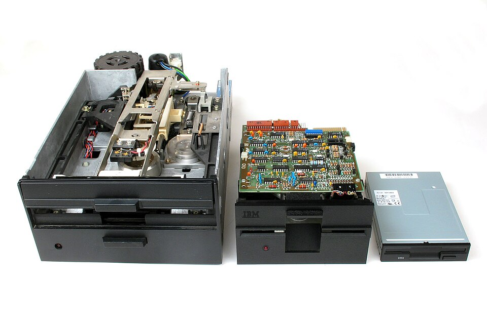

From Punched Cards to Solid-State Drives
Before disks existed, information was stored on cardboard cards with holes punched in them. Each hole represented data, and machines read it by passing needles through the perforations.
The system became popular with Herman Hollerith's tabulating machines, which were used for the 1890 United States Census. Later, 80-column punched cards continued to be used until the 1970s to enter programs into computers.
They could be sorted, stacked, and transported easily. Deleting information was not possible, however, because once a hole was punched, it was permanent.
Magnetic tape arrived before almost every other storage technology. As early as 1951, the Univac I stored data on magnetic tape, and during the following decades it became the standard medium for large computing facilities due to its high capacity and low cost per megabyte.
Interestingly, tape never completely disappeared. Backup systems in companies and universities still often rely on magnetic tape, because storing years of archived information is much cheaper than using hard disks. Most home users never see it, but it continues to play an important role behind the scenes.
The first hard drive was the IBM RAMAC 350, introduced in 1956. It weighed nearly one ton and stored five megabytes of data on fifty 24-inch platters.
Over time, platters became smaller while storage density increased dramatically. During the 1980s, hard drives moved from large computer rooms into personal computers. Today, desktop models can store several terabytes and remain the most economical option when large amounts of storage space are needed.

The floppy disk was introduced by IBM in 1971. It was a magnetic disk protected by a square casing that allowed users to save and delete data many times, something impossible with punched cards.
The first floppy disks were eight inches in size and stored about eighty kilobytes. They were followed by 5.25-inch models and, during the 1980s, 3.5-inch disks with a capacity of 1.44 megabytes. These became the standard way of transferring files between computers until the late 1990s.
In 1982, Sony and Philips introduced the Compact Disc (CD), originally designed for music. A CD can store approximately 700 megabytes of data and is read by a laser, without any physical contact with the surface.
The DVD arrived in 1995 with the same shape but far greater capacity: 4.7 gigabytes on a single-layer disc and twice as much on dual-layer versions. For several years, CD and DVD writers coexisted with floppy disks before eventually replacing them for data backups.
It was the first step toward storing full-length video on a disc that could fit in the palm of your hand.
USB flash drives appeared in the year 2000. They consist of flash memory inside a small casing that connects directly to a USB port, requiring no separate reader or cables.
They replaced floppy disks very quickly because they offered hundreds of times more storage capacity, faster transfer speeds, and a compact size that fit easily into a pocket.
The first commercial solid-state drives appeared in the early 1990s. They were very expensive and had limited capacities, so they did not become common in personal computers until the following decade.
Their major advantage over hard drives is the absence of moving parts. There is no need to wait for platters to spin or for heads to move into position. In just a few years, SSDs went from being a luxury item to becoming standard equipment in laptops and desktop computers.